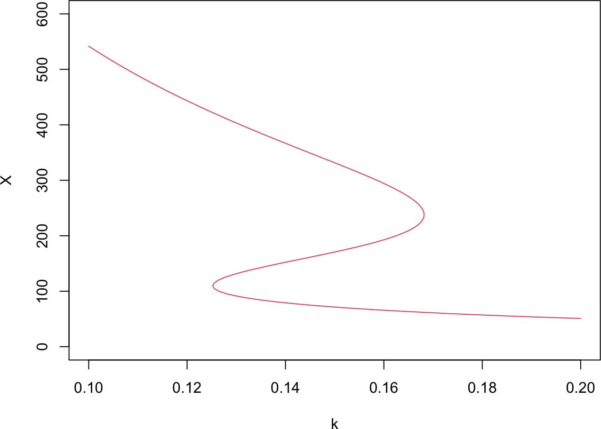
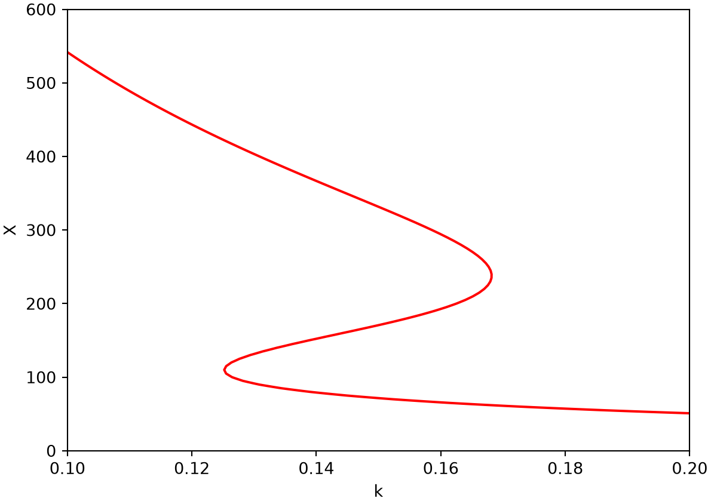
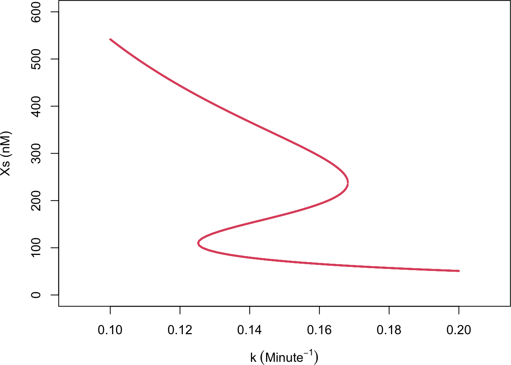
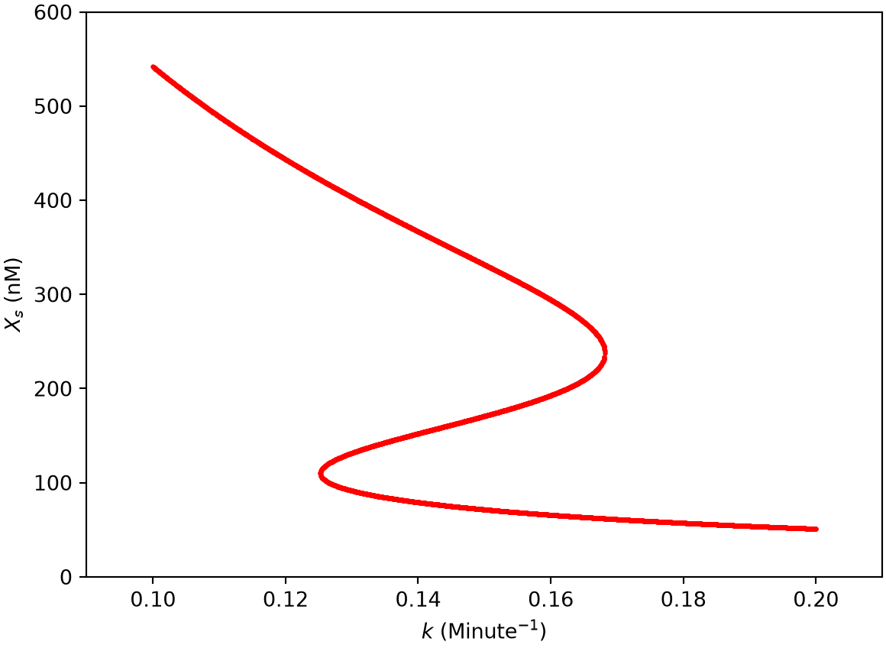
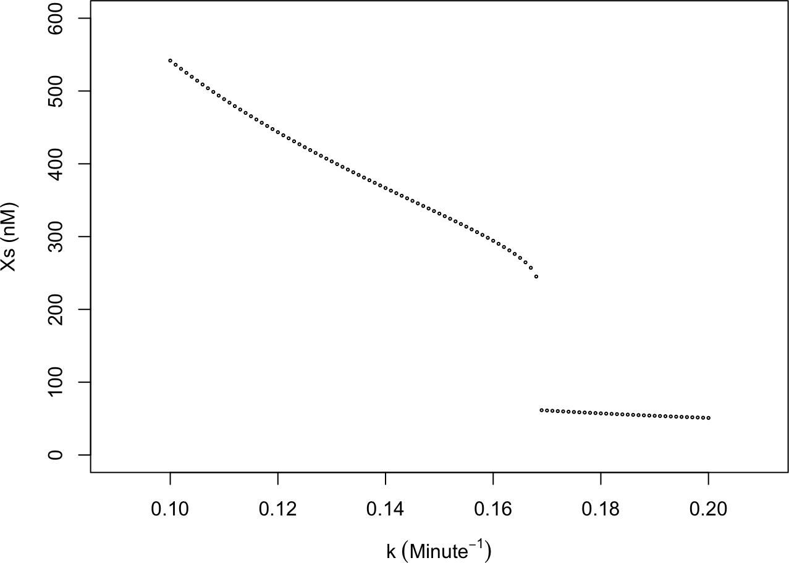
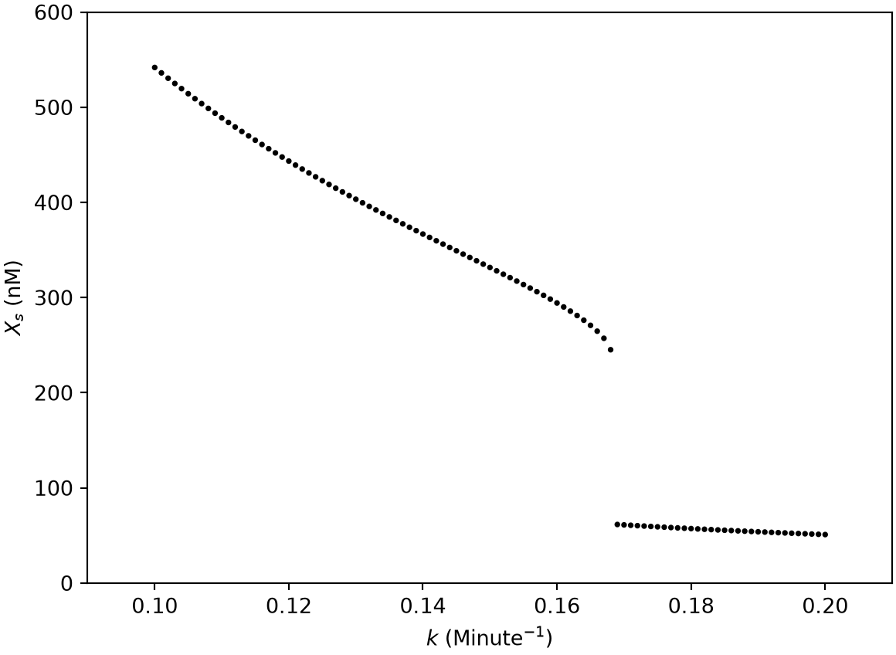
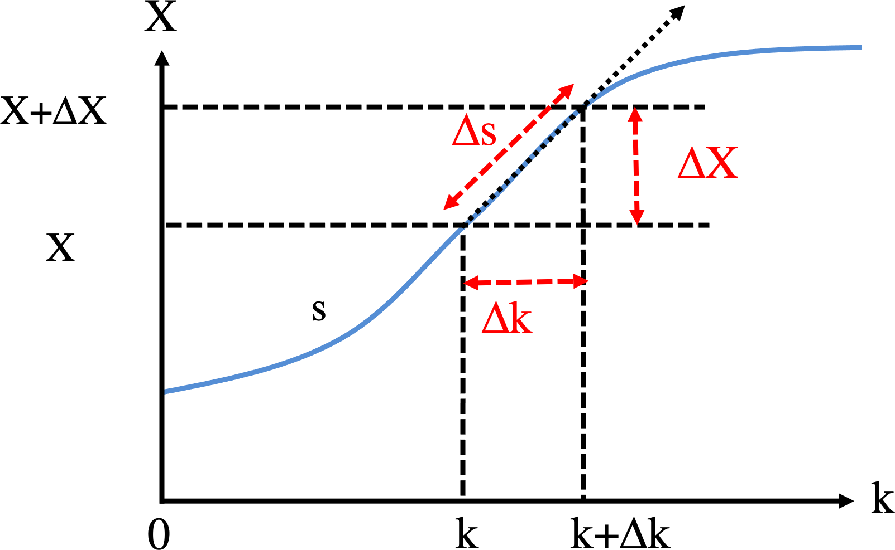
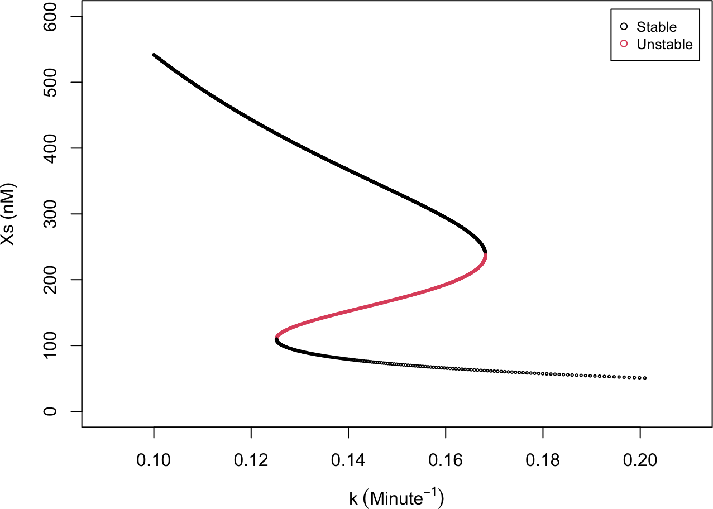
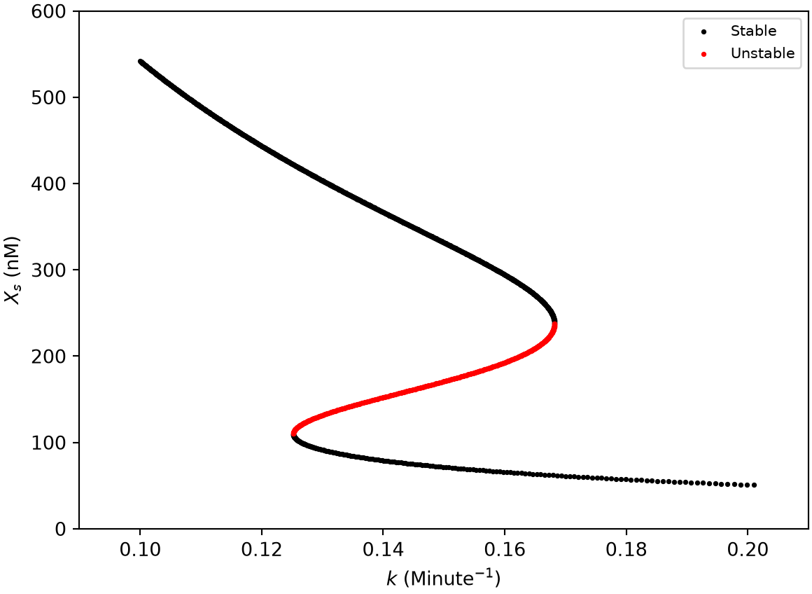

derivs_k <- function(X, k) 10 + 45 * X^4 / (X^4 + 200^4) - k * X2F. Bifurcation: finding curves
In Part 2E we built the bifurcation diagram by sampling: at each value of \(k\) we located the steady states (the roots of \(f(X, k) = 0\), or the states an ODE relaxes onto), producing a cloud of points that we then connected into a curve. That works, but it treats the diagram as a set of independent points and depends on a post-hoc reordering step to make a curve out of them.
This chapter takes the complementary view: the bifurcation set \(\{(k, X) : f(X, k) = 0\}\) is a curve in the \((k, X)\) plane, and we trace it directly. Two families of methods do this. The contour method treats \(f(k, X)\) as a surface and extracts its zero-level contour, interpolating within a grid to place the curve accurately. Numerical continuation starts from one point on the curve and walks along it with a predictor–corrector step. These are the general-purpose tools of bifurcation analysis, and they return the curve already ordered.
2F.1 The model derivative
We use the same self-activating-gene model as in Part 2E,
\[\begin{equation} \frac{dX}{dt} = f(X, k) = 10 + 45\frac{X^4}{X^4 + 200^4} - kX . \tag{1} \end{equation}\]
Every method below evaluates \(f(X, k)\), so we define it once in each language. Because each chapter renders as an independent session, this repeats the derivs_k used in Part 2E rather than relying on it.
R implementation
Python implementation
import numpy as np
import matplotlib.pyplot as plt
def derivs_k(X, k):
return 10 + 45 * X**4 / (X**4 + 200**4) - k * X2F.2 Contour method
Write \(z = f(k, X)\), a surface over the \((k, X)\) plane. The steady states are exactly the points where this surface crosses zero, so the bifurcation curve is the zero-level contour of \(z\). Standard contour algorithms take \(f\) on a grid of \((k, X)\) and trace the level set \(z = 0\); both R’s contour() and Matplotlib’s contour() do this. The method is powerful and stable, and, unlike the sampling methods of Part 2E, it returns the curve as connected, ordered line segments rather than a point cloud. Its one weakness is that it can miss a branch if the solution set is not connected. Here \(f(X, k) = 0\) is a single connected S-shaped curve, so one contour captures all of it.
NoteRecipe 2F.2.1
Objective. Trace the bifurcation curve as a connected, ordered set of steady states.
Model. A self-activating gene: basal transcription plus an excitatory Hill function, minus linear degradation, f(X, k) = g0 + g1*(X/Xth)^n/(1 + (X/Xth)^n) - k*X, with k the control parameter.
Method. Treat z = f(k, X) as a surface over the (k, X) plane and take its zero-level contour on a grid.
Test. g0 = 10, g1 = 45, Xth = 200, n = 4, evaluated over a grid of (k, X).
Show. A plot of the zero contour of f(k, X) in the (k, X) plane (the bifurcation curve).
Verification. The zero contour is the same S-shaped curve as in Part 2E, returned as connected line segments rather than a point cloud; one contour captures the whole connected curve.
R implementation
# evaluate f on a grid of (k, X), then draw its zero-level contour
k_all <- seq(0.1, 0.2, by = 0.001)
X_all <- seq(0, 600, by = 5)
z <- outer(k_all, X_all, function(k, X) derivs_k(X, k)) # z[i, j] = f(X_all[j], k_all[i])
contour(k_all, X_all, z, levels = 0, col = 2, drawlabels = FALSE,
xlab = "k", ylab = "X")
Python implementation
# evaluate f on a grid of (k, X), then draw its zero-level contour
k_all = np.arange(0.1, 0.2 + 0.001, 0.001)
X_all = np.arange(0, 600 + 5, 5)
K, Xg = np.meshgrid(k_all, X_all) # grid of k and X
z = derivs_k(Xg, K) # f(X, k) at every grid point
plt.contour(k_all, X_all, z, levels=[0], colors="red")
plt.xlabel("k"); plt.ylabel("X")
plt.show()
The contour traces the whole S-curve as connected segments, already ordered by the algorithm, with no separate reordering step. This ordered output is the main practical advantage over the point-sampling methods, and it is what the interpolation and continuation methods below build on.
2F.3 Bilinear interpolation
The built-in contour routines are black boxes. To see how contour extraction works, we build a simple one from bilinear interpolation, the two-dimensional analogue of linear interpolation. Inside a grid square with corners \((x_1, y_1), (x_2, y_1), (x_1, y_2), (x_2, y_2)\) and corner values \(f_{ij} = f(x_i, y_j)\), a solution of \(f(x, y) = 0\) exists whenever the four corners are not all the same sign. We first interpolate linearly in \(x\) along the bottom and top edges,
\[\begin{equation} \begin{cases} f(x, y_1) = \dfrac{x_2 - x}{x_2 - x_1} f_{11} + \dfrac{x - x_1}{x_2 - x_1} f_{21} \\[2mm] f(x, y_2) = \dfrac{x_2 - x}{x_2 - x_1} f_{12} + \dfrac{x - x_1}{x_2 - x_1} f_{22} \end{cases} \tag{2} \end{equation}\]
and then interpolate those linearly in \(y\), giving the full bilinear surface
\[ \begin{aligned} f(x, y) = {} & \frac{1}{(x_2 - x_1)(y_2 - y_1)} \begin{pmatrix} x_2 - x & x - x_1 \end{pmatrix} \\ & \times \begin{pmatrix} f_{11} & f_{12} \\ f_{21} & f_{22} \end{pmatrix} \begin{pmatrix} y_2 - y \\ y - y_1 \end{pmatrix} . \end{aligned} \]
Setting \(f(x, y) = 0\) and solving for \(y\) gives
\[\begin{equation} y = \frac{f(x, y_1)\, y_2 - f(x, y_2)\, y_1}{f(x, y_1) - f(x, y_2)} , \tag{3} \end{equation}\]
which has the same form as the false-position step of Part 2E. To trace the contour we visit every grid square whose corners differ in sign, sample \(x\) across it, and read off the matching \(y\) from Equations (2) and (3), keeping only points that land inside the square.
R implementation
# bilinear contour in one grid square: sample x, solve f = 0 for y (Eqs 2-3)
# returns flattened x,y pairs where the z = 0 curve crosses the square, or NULL
contour_segment_bilinear <- function(x_all, y_all, z, ind_x, ind_y, npoints = 20) {
f11 <- z[ind_x, ind_y]; f21 <- z[ind_x + 1, ind_y]
f12 <- z[ind_x, ind_y + 1]; f22 <- z[ind_x + 1, ind_y + 1]
if (length(unique(sign(c(f11, f21, f12, f22)))) == 1) return(NULL) # all same sign: no crossing
x1 <- x_all[ind_x]; x2 <- x_all[ind_x + 1]
y1 <- y_all[ind_y]; y2 <- y_all[ind_y + 1]
x_points <- seq(x1, x2, length.out = npoints)
f_x_y1 <- ((x2 - x_points) * f11 + (x_points - x1) * f21) / (x2 - x1) # Eq (2)
f_x_y2 <- ((x2 - x_points) * f12 + (x_points - x1) * f22) / (x2 - x1) # Eq (2)
y_points <- (f_x_y1 * y2 - f_x_y2 * y1) / (f_x_y1 - f_x_y2) # Eq (3)
keep <- which((y_points - y1) * (y2 - y_points) > 0) # keep y inside (y1, y2)
if (length(keep) == 0) return(NULL)
c(t(cbind(x_points[keep], y_points[keep])))
}# build f on the grid, then extract the zero contour square by square
k_all <- seq(0.1, 0.2, by = 0.001)
X_all <- seq(0, 600, by = 5)
z <- outer(k_all, X_all, function(k, X) derivs_k(X, k)) # z[i, j] = f(X_all[j], k_all[i])
segments <- list()
for (i in seq_len(length(k_all) - 1)) {
for (j in seq_len(length(X_all) - 1)) {
seg <- contour_segment_bilinear(k_all, X_all, z, i, j)
if (length(seg) > 0) segments[[length(segments) + 1]] <- seg
}
}
null_contour <- matrix(unlist(segments), ncol = 2, byrow = TRUE)
plot(null_contour[, 1], null_contour[, 2], pch = 20, cex = 0.3, col = 2,
xlab = expression(k ~ (Minute^{-1})), ylab = "Xs (nM)",
xlim = c(0.09, 0.21), ylim = c(0, 600))
Python implementation
# bilinear contour in one grid square: sample x, solve f = 0 for y (Eqs 2-3)
# returns x,y pairs where the z = 0 curve crosses the square, or None
def contour_segment_bilinear(x_all, y_all, z, ind_x, ind_y, npoints=20):
f11 = z[ind_x, ind_y]; f21 = z[ind_x + 1, ind_y]
f12 = z[ind_x, ind_y + 1]; f22 = z[ind_x + 1, ind_y + 1]
if len(np.unique(np.sign([f11, f21, f12, f22]))) == 1: # all same sign: no crossing
return None
x1, x2 = x_all[ind_x], x_all[ind_x + 1]
y1, y2 = y_all[ind_y], y_all[ind_y + 1]
x_points = np.linspace(x1, x2, npoints)
f_x_y1 = ((x2 - x_points) * f11 + (x_points - x1) * f21) / (x2 - x1) # Eq (2)
f_x_y2 = ((x2 - x_points) * f12 + (x_points - x1) * f22) / (x2 - x1) # Eq (2)
y_points = (f_x_y1 * y2 - f_x_y2 * y1) / (f_x_y1 - f_x_y2) # Eq (3)
keep = (y_points - y1) * (y2 - y_points) > 0 # keep y inside (y1, y2)
pts = np.column_stack((x_points[keep], y_points[keep]))
return pts if pts.size else None# build f on the grid, then extract the zero contour square by square
k_all = np.arange(0.1, 0.2 + 0.001, 0.001)
X_all = np.arange(0, 600 + 5, 5)
K, Xg = np.meshgrid(k_all, X_all, indexing="ij") # z[i, j] = f(X_all[j], k_all[i])
z = derivs_k(Xg, K)
segments = []
for i in range(len(k_all) - 1):
for j in range(len(X_all) - 1):
seg = contour_segment_bilinear(k_all, X_all, z, i, j)
if seg is not None:
segments.append(seg)
null_contour = np.vstack(segments)
plt.scatter(null_contour[:, 0], null_contour[:, 1], color="red", s=2)
plt.xlabel(r"$k$ (Minute$^{-1}$)"); plt.ylabel(r"$X_s$ (nM)")
plt.xlim(0.09, 0.21); plt.ylim(0, 600); plt.show()(0.09, 0.21)
(0.0, 600.0)
The hand-built extractor recovers the same S-curve as the library contour routine. Bilinear interpolation is cheap and widely used (in image processing, for instance), but it treats \(f\) as flat-sided within each square, so a coarse grid shows visible facets. A smoother fit needs a higher-order scheme.
2F.4 Bicubic interpolation
Bicubic interpolation is that higher-order scheme. Instead of a flat-sided fit, it models \(f\) within each grid square as a bicubic polynomial
\[ f(x, y) = \sum_{i=0}^{3} \sum_{j=0}^{3} a_{ij}\, x^i y^j , \]
whose 16 coefficients \(a_{ij}\) are fixed by 16 conditions at the four corners: the four function values, the eight first derivatives (\(\partial f / \partial x\) and \(\partial f / \partial y\)), and the four mixed derivatives \(\partial^2 f / \partial x\, \partial y\). The fit is then continuous in both value and slope across square boundaries, so the extracted contour comes out smooth rather than faceted. We do not implement it here; the construction is detailed in the “Higher Order for Smoothness: Bicubic Interpolation” section of Numerical Recipes (Press et al. 2007).
2F.5 Numerical continuation
The most general method, and the one used by professional bifurcation software, is numerical continuation (Allgower and Georg 1990). We want \(X(k)\) satisfying \(f(X, k) = 0\) across a range of \(k\). Differentiating that constraint implicitly, \(\frac{\partial f}{\partial X}\,dX + \frac{\partial f}{\partial k}\,dk = 0\), gives the slope of the bifurcation curve,
\[\begin{equation} \frac{dX}{dk} \equiv h(X, k) = -\frac{\partial f / \partial k}{\partial f / \partial X} . \tag{4} \end{equation}\]
Continuation then alternates a predictor and a corrector. From a known point \((k, X)\) on the curve, the predictor steps along the tangent,
\[\begin{equation} \begin{cases} k_{new} = k + \Delta k \\ X_{new} = X + \dfrac{dX}{dk}\,\Delta k \end{cases} \tag{5} \end{equation}\]
and the corrector pulls that guess back onto the curve. We correct with Newton’s method: to solve \(f(X) = 0\) from a guess \(X_0\), linearize \(f(X_0 + \Delta X) \approx f(X_0) + f'(X_0)\,\Delta X = 0\), giving
\[\begin{equation} \Delta X = -\frac{f(X_0)}{f'(X_0)} , \qquad X_{n+1} = X_n - \frac{f(X_n)}{f'(X_n)} , \tag{6} \end{equation}\]
iterated until \(|f| < \epsilon\). Unlike bisection, Newton is not bracketed: it converges to whichever root is nearest the guess, so the initial value decides which branch we land on. For our \(f\) the derivatives it needs are \(\frac{\partial f}{\partial X} = \frac{180}{X}\frac{(X/200)^4}{(1 + (X/200)^4)^2} - k\) and \(\frac{\partial f}{\partial k} = -X\).
NoteRecipe 2F.5.1
Objective. Follow the bifurcation curve X(k) with a predictor-corrector method.
Model. A self-activating gene: basal transcription plus an excitatory Hill function, minus linear degradation, f(X, k) = g0 + g1*(X/Xth)^n/(1 + (X/Xth)^n) - k*X, with k the control parameter.
Method. Numerical continuation: from a known point on f(X, k) = 0, predict along the tangent dX/dk = -(df/dk) / (df/dX), then correct back onto the curve with a root solve at the new k.
Test. g0 = 10, g1 = 45, Xth = 200, n = 4, continued across a range of k.
Show. A plot of the continued branch X(k), showing where it stalls at the fold.
Verification. It follows a branch accurately away from folds but stalls at a fold, where dX/dk diverges because k is multivalued there.
R implementation
# Newton's method: solve f(X) = 0 from a guess; stop if X leaves X_range (Eq. 6)
dfdX <- function(X, k) 180 / X * (X/200)^4 / (1 + (X/200)^4)^2 - k # df/dX
find_root_Newton <- function(X, func, dfunc, X_range, error = 1e-3, ...) {
f <- func(X, ...)
while (abs(f) > error) {
X <- X - f / dfunc(X, ...)
if ((X - X_range[1]) * (X - X_range[2]) > 0) break # left the range: not converging
f <- func(X, ...)
}
X
}
# from different guesses at k = 0.15, Newton finds different roots
for (g in list(c(500, 0.1), c(500, 0.15), c(100, 0.15), c(150, 0.15))) {
root <- find_root_Newton(g[1], derivs_k, dfdX, c(0, 800), k = g[2])
cat(sprintf("guess %3d, k = %.2f: root = %.1f\n", g[1], g[2], root))
}guess 500, k = 0.10: root = 541.8
guess 500, k = 0.15: root = 331.6
guess 100, k = 0.15: root = 71.5
guess 150, k = 0.15: root = 170.7# march along the curve: tangent predictor (Eq. 5) + Newton corrector, stepping in k
dfdk <- function(X, k) -X # df/dk
k_range <- c(0.1, 0.2); dk <- 0.001
results <- matrix(NA, nrow = (k_range[2] - k_range[1]) / dk + 1, ncol = 3) # k, X, stability
k <- 0.1
X_new <- find_root_Newton(500, derivs_k, dfdX, c(0, 800), k = k) # start on the high branch
cycle <- 1
results[cycle, ] <- c(k, X_new, if (dfdX(X_new, k) < 0) 1 else 2)
while (k < k_range[2]) {
slope <- -dfdk(X_new, k) / dfdX(X_new, k) # dX/dk from Equation (4); blows up at a fold
k <- k + dk
X_init <- X_new + dk * slope # predictor, Equation (5)
X_new <- find_root_Newton(X_init, derivs_k, dfdX, c(0, 800), k = k) # Newton correction
cycle <- cycle + 1
results[cycle, ] <- c(k, X_new, if (!is.na(X_new) && dfdX(X_new, k) < 0) 1 else 2)
}
results <- results[1:cycle, ]
plot(results[, 1], results[, 2], pch = 1, cex = 0.3, col = results[, 3],
xlab = expression(k ~ (Minute^{-1})), ylab = "Xs (nM)",
xlim = c(0.09, 0.21), ylim = c(0, 600))
Python implementation
# Newton's method: solve f(X) = 0 from a guess; stop if X leaves X_range (Eq. 6)
def dfdX(X, k):
x_frac = (X / 200)**4
return 180 / X * x_frac / (1 + x_frac)**2 - k
def find_root_Newton(X, func, dfunc, X_range, error=1e-3, **kwargs):
f = func(X, **kwargs)
while abs(f) > error:
X = X - f / dfunc(X, **kwargs)
if (X - X_range[0]) * (X - X_range[1]) > 0: # left the range: not converging
break
f = func(X, **kwargs)
return X
# from different guesses at k = 0.15, Newton finds different roots
for X0, k in [(500, 0.1), (500, 0.15), (100, 0.15), (150, 0.15)]:
root = find_root_Newton(X0, derivs_k, dfdX, (0, 800), k=k)
print(f"guess {X0:3d}, k = {k:.2f}: root = {root:.1f}")guess 500, k = 0.10: root = 541.8
guess 500, k = 0.15: root = 331.6
guess 100, k = 0.15: root = 71.5
guess 150, k = 0.15: root = 170.7# march along the curve: tangent predictor (Eq. 5) + Newton corrector, stepping in k
def dfdk(X, k):
return -X
k_range = (0.1, 0.2); dk = 0.001
k = 0.1
X_new = find_root_Newton(500, derivs_k, dfdX, (0, 800), k=k) # start on the high branch
ks, Xs, stab = [k], [X_new], [1 if dfdX(X_new, k) < 0 else 2]
while k < k_range[1]:
slope = -dfdk(X_new, k) / dfdX(X_new, k) # dX/dk from Equation (4); blows up at a fold
k += dk
X_init = X_new + dk * slope # predictor, Equation (5)
X_new = find_root_Newton(X_init, derivs_k, dfdX, (0, 800), k=k) # Newton correction
ks.append(k); Xs.append(X_new); stab.append(1 if dfdX(X_new, k) < 0 else 2)
ks, Xs, stab = np.array(ks), np.array(Xs), np.array(stab)
plt.scatter(ks, Xs, s=3, c=np.where(stab == 1, "black", "red"))
plt.xlabel(r"$k$ (Minute$^{-1}$)"); plt.ylabel(r"$X_s$ (nM)")
plt.xlim(0.09, 0.21); plt.ylim(0, 600); plt.show()(0.09, 0.21)
(0.0, 600.0)
Continuation traces the high stable branch cleanly from \(k = 0.1\) down to the upper turning point near \(k = 0.168\). There the slope \(dX/dk \to \infty\) (the curve is vertical in the \((k, X)\) plane), the tangent predictor overshoots, and Newton lands on the far low branch, which the sweep then follows. So stepping in \(k\) captures the two stable branches but jumps across the fold: it misses the unstable middle branch and cannot turn the corner. It is also awkward that one slope value corresponds to two travel directions along the curve. Arc-length continuation, next, fixes both.
2F.6 Arc-length continuation
The trouble at the fold is that we parameterized the curve by \(k\), which is multivalued there. Arc-length continuation (Allgower and Georg 1990) parameterizes instead by the arc length \(s\) measured along the curve, seeking \(X(s)\) and \(k(s)\).

A step of length \(\Delta s\) along the curve splits into a \(\Delta k\) and a \(\Delta X\) with \(\Delta s^2 = \Delta k^2 + \Delta X^2\) and \(\Delta X = h\,\Delta k\), where \(h(X, k) = dX/dk\) from Equation (4). Solving these together,
\[\begin{equation} \begin{cases} \Delta k = \pm \dfrac{1}{\sqrt{1 + h^2}}\,\Delta s \\[2mm] \Delta X = h\,\Delta k \end{cases} \tag{7} \end{equation}\]
Now even at a fold, where \(h \to \infty\), the steps stay bounded: \(\Delta k \to 0\) and \(\Delta X \to \pm\Delta s\), so the predictor moves almost vertically and rounds the corner instead of overshooting. The \(\pm\) sign is chosen to keep travelling in the same direction as the previous step, and Newton corrects each predicted point back onto the curve.
NoteRecipe 2F.6.1
Objective. Trace the entire S-curve, through the folds, without stalling.
Model. A self-activating gene: basal transcription plus an excitatory Hill function, minus linear degradation, f(X, k) = g0 + g1*(X/Xth)^n/(1 + (X/Xth)^n) - k*X, with k the control parameter.
Method. Arc-length continuation: parameterize by arc length s instead of k, splitting each step into dk and dX with ds^2 = dk^2 + dX^2 and dX = h*dk (h = dX/dk), so the step stays finite where dX/dk diverges.
Test. g0 = 10, g1 = 45, Xth = 200, n = 4, across the full bistable range.
Show. A plot of the full S-shaped curve traced through both folds.
Verification. The curve is traced smoothly through both folds, recovering the full S-shape (both stable branches and the unstable middle) where plain k-continuation stalled.
R implementation
# trace the whole curve in arc length s: each step splits into (dk, dX) by Eq (7)
k_range <- c(0.1, 0.2); ds <- 0.3; nmax <- 10000
results <- matrix(NA, nrow = nmax, ncol = 3) # columns: k, X, stability
k <- 0.1
X_new <- find_root_Newton(500, derivs_k, dfdX, c(0, 800), k = k) # start on the high branch
step_k_prev <- 1; step_X_prev <- 0 # initial travel direction: increasing k
cycle <- 1
results[cycle, ] <- c(k, X_new, if (dfdX(X_new, k) < 0) 1 else 2)
while ((k - k_range[1]) * (k - k_range[2]) <= 0 && cycle < nmax) {
h <- -dfdk(X_new, k) / dfdX(X_new, k) # dX/dk, Equation (4)
step_k <- ds / sqrt(1 + h^2) # Equation (7); bounded even as h -> Inf
step_X <- step_k * h
if (step_k_prev * step_k + step_X_prev * step_X < 0) { # keep the same travel direction
step_k <- -step_k; step_X <- -step_X
}
step_k_prev <- step_k; step_X_prev <- step_X
k <- k + step_k
X_new <- find_root_Newton(X_new + step_X, derivs_k, dfdX, c(0, 800), k = k) # predict + correct
cycle <- cycle + 1
results[cycle, ] <- c(k, X_new, if (!is.na(X_new) && dfdX(X_new, k) < 0) 1 else 2)
}
results <- na.omit(results)
plot(results[, 1], results[, 2], pch = 1, cex = 0.3, col = results[, 3],
xlab = expression(k ~ (Minute^{-1})), ylab = "Xs (nM)",
xlim = c(0.09, 0.21), ylim = c(0, 600))
legend("topright", inset = 0.02, legend = c("Stable", "Unstable"),
col = 1:2, pch = 1, cex = 0.8)
Python implementation
# trace the whole curve in arc length s: each step splits into (dk, dX) by Eq (7)
k_range = (0.1, 0.2); ds = 0.3; nmax = 10000
k = 0.1
X_new = find_root_Newton(500, derivs_k, dfdX, (0, 800), k=k) # start on the high branch
step_k_prev, step_X_prev = 1.0, 0.0 # initial travel direction: increasing k
ks, Xs, stab = [k], [X_new], [1 if dfdX(X_new, k) < 0 else 2]
cycle = 1
while (k - k_range[0]) * (k - k_range[1]) <= 0 and cycle < nmax:
h = -dfdk(X_new, k) / dfdX(X_new, k) # dX/dk, Equation (4)
step_k = ds / np.sqrt(1 + h**2) # Equation (7); bounded even as h -> inf
step_X = step_k * h
if step_k_prev * step_k + step_X_prev * step_X < 0: # keep the same travel direction
step_k, step_X = -step_k, -step_X
step_k_prev, step_X_prev = step_k, step_X
k += step_k
X_new = find_root_Newton(X_new + step_X, derivs_k, dfdX, (0, 800), k=k) # predict + correct
ks.append(k); Xs.append(X_new); stab.append(1 if dfdX(X_new, k) < 0 else 2)
cycle += 1
ks, Xs, stab = np.array(ks), np.array(Xs), np.array(stab) == 1 # boolean stable mask
plt.scatter(ks[stab], Xs[stab], s=3, color="black", label="Stable")
plt.scatter(ks[~stab], Xs[~stab], s=3, color="red", label="Unstable")
plt.xlabel(r"$k$ (Minute$^{-1}$)"); plt.ylabel(r"$X_s$ (nM)")
plt.xlim(0.09, 0.21); plt.ylim(0, 600)(0.09, 0.21)
(0.0, 600.0)plt.legend(loc="upper right", fontsize=8); plt.show()
This traces the entire S-curve in a single sweep, unstable middle branch included, rounding both folds. Arc-length continuation (and its pseudo-arclength refinements) is the engine behind bifurcation-analysis software. The Newton correction can still struggle extremely close to a fold, where \(f'(X) \approx 0\); higher-order correctors such as Halley’s method ease that case.